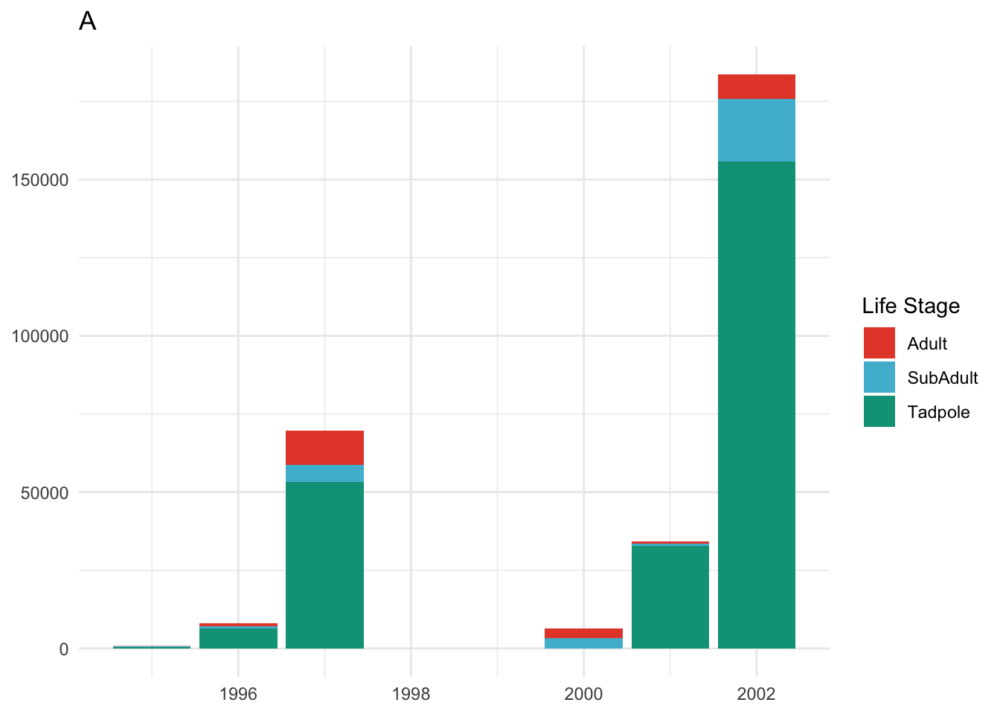
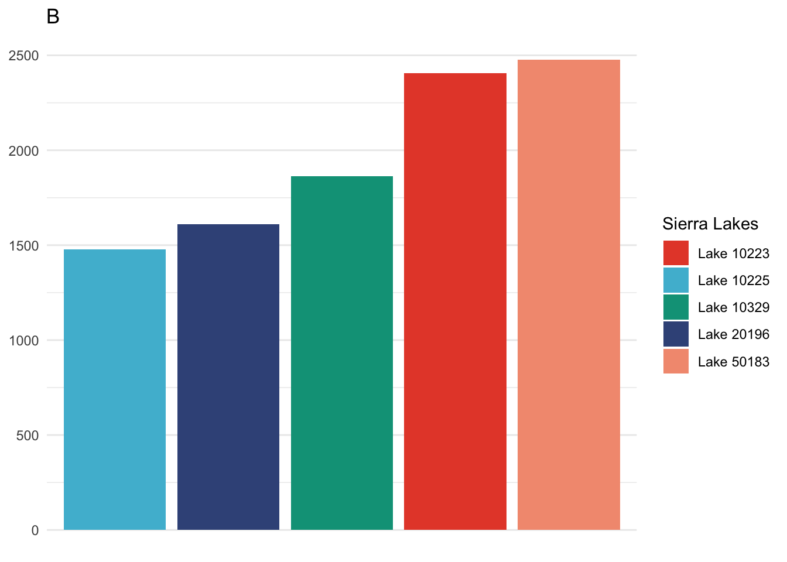
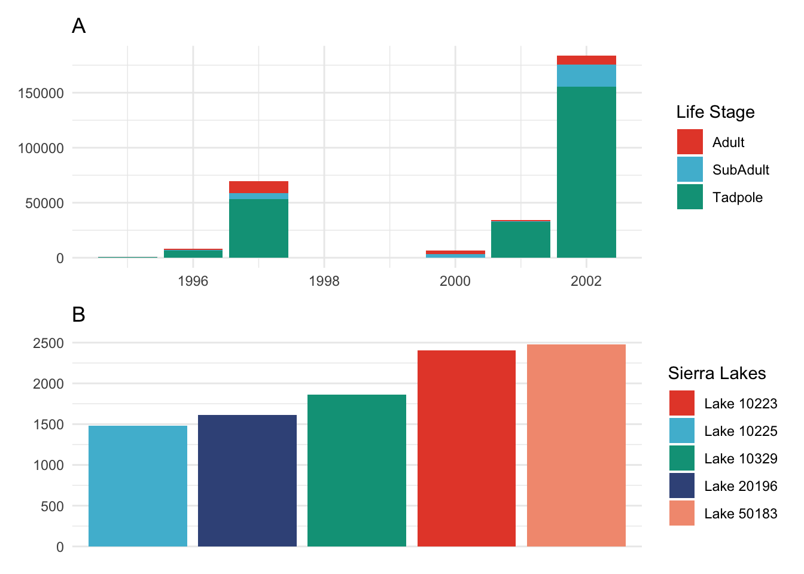

Code
library(tidyverse)
library(here)
library(janitor)
library(ggplot2)
library(patchwork)
library(lubridate)
library(tsibble)
library(ggsci)Data citation: Knapp, R.A., C. Pavelka, E.E. Hegeman, and T.C. Smith. 2020. The Sierra Lakes Inventory Project: Non-Native fish and community composition of lakes and ponds in the Sierra Nevada, California ver 2. Environmental Data Initiative. https://doi.org/10.6073/pasta/d835832d7fd00d9e4466e44eea87fab3
Metadata & info: https://portal.edirepository.org/nis/metadataviewer?packageid=edi.577.2
library(tidyverse)
library(here)
library(janitor)
library(ggplot2)
library(patchwork)
library(lubridate)
library(tsibble)
library(ggsci)sierra_data <- read_csv(here('data/sierra_amphibians.csv')) %>%
clean_names()ramu <- sierra_data %>%
select(lake_id, survey_date, amphibian_species, amphibian_life_stage, amphibian_number) %>%
filter(amphibian_species == 'RAMU') %>%
filter(amphibian_life_stage != 'EggMass')%>%
mutate(survey_date = lubridate::mdy(survey_date)) %>%
mutate(year = lubridate::year(survey_date))
ramu_by_lifecycle <- ramu %>%
group_by(year, amphibian_life_stage) %>%
summarize(amphibian_number = sum(amphibian_number))lifestage_gg <- ggplot(ramu_by_lifecycle, aes(x = year, y = amphibian_number, fill = amphibian_life_stage)) +
geom_col() +
theme_minimal() +
scale_fill_npg() +
theme(axis.title = element_blank(),
plot.caption = element_text(hjust = 0.5)) +
labs(title = "A",
fill = "Life Stage")
lifestage_gg
ramu_lakes <- ramu %>%
filter(amphibian_life_stage != "Tadpole")
# add in the word lake so you can reorder them (reformatting)
word_to_add <- "Lake"
# Add the word to the entire column of lake_id
ramu_lakes$lake_id <- paste(word_to_add, ramu_lakes$lake_id, sep = " ")
# Group
grouped_ramu_lakes <- ramu_lakes %>%
select(lake_id, amphibian_number) %>%
group_by(lake_id) %>%
summarize(total_amphibians = sum(amphibian_number))
top_5_lakes <- grouped_ramu_lakes %>%
filter(lake_id %in% c("Lake 50183" , "Lake 10223", "Lake 10329", "Lake 20196", "Lake 10225"))lakes_gg <- ggplot(top_5_lakes, aes(fct_reorder(lake_id, total_amphibians), total_amphibians, fill = lake_id)) +
geom_col() +
theme_minimal() +
scale_x_discrete(labels = NULL, breaks = NULL) +
theme(axis.title = element_blank(),
plot.caption = element_text(hjust = 0.5)) +
scale_fill_npg(palette = c("nrc")) +
labs(title = "B",
fill = "Sierra Lakes")
lakes_gg
combined_plots <- (lifestage_gg / lakes_gg)
combined_plots